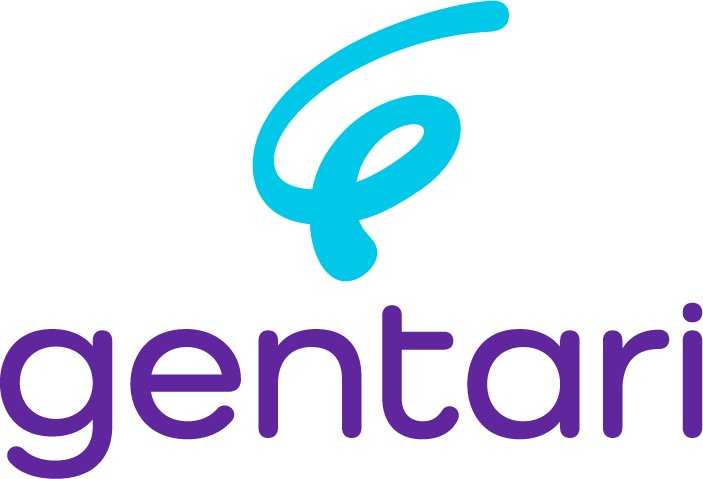

01 Logo Dashboard/public/branding

Primary lockup · gentari-logo.png (703×479)Icon · gentari-icon.png (282×282)
Icon on Gentari Purple
Icon on dark
Only full-colour versions exist in the repo. The lockup's purple wordmark needs a light background. No white or mono version is supplied, so on purple or dark backgrounds use the icon on its own.
02 Core colours sampled from the logo
Gentari Purple
#60269E · RGB 96 38 158Wordmark colour. Use for headings, title backgrounds and primary actions.Gentari Cyan
#00C8E8 · RGB 0 200 232Icon colour. Use for accents and highlights. White text on cyan fails contrast, so use dark text.03 Dashboard UI palette Dashboard/app/globals.css · light theme
primary
#6B2E99accent-foreground
#441D62accent
#F1EAF6foreground
#0F1729muted-foreground
#65758Bborder
#E1E7EFbackground
#F8FAFCmuted
#F1F5F9card
#FFFFFFsuccess
#21C45Dwarning
#F59F0Adestructive
#DC2828The dashboard's primary (#6B2E99) is close to the logo purple (#60269E) but not the same. For brand work such as decks, use #60269E. The dashboard's dark theme switches its primary to blue (#3C83F6), which is not a brand colour.
04 Typography not defined in the repo
Headline 44 / Bold
Subheading 26 / Semibold
Body 17 / Regular. Muted text in #65758B for captions, sources and notes. This sheet is set in Inter as a neutral stand-in.
- The dashboard sets no font, so it uses the browser's default sans-serif.
- The wordmark is lettering in the logo file, not a font you can install.
- Until the official typeface is confirmed, use Inter or another clean geometric sans.
05 Not in the repo get these from Gentari Brand / Comms
- Official brand typeface(s) and type scale
- Logo clear space, minimum size, and misuse rules
- White, mono and horizontal logo versions, plus vector (SVG/EPS) files
- Secondary and extended colour palette, and approved gradients
- Photography, iconography, graphic devices, and tone of voice
- Official PowerPoint master / slide template